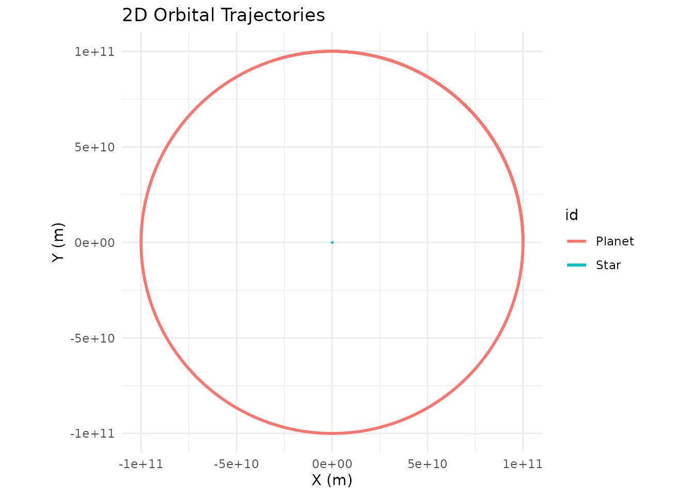
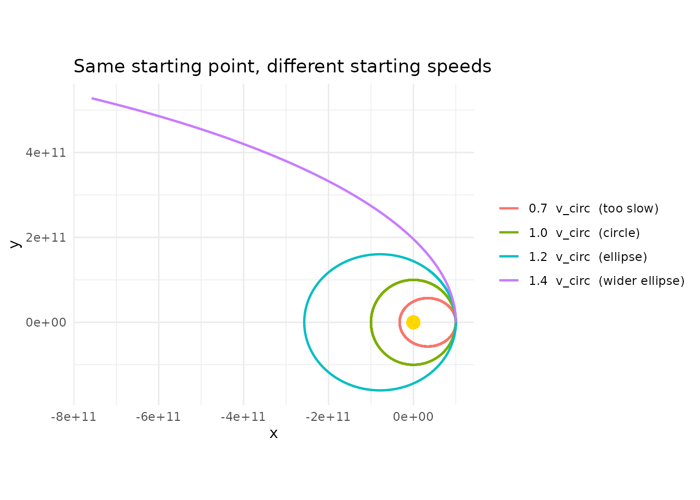
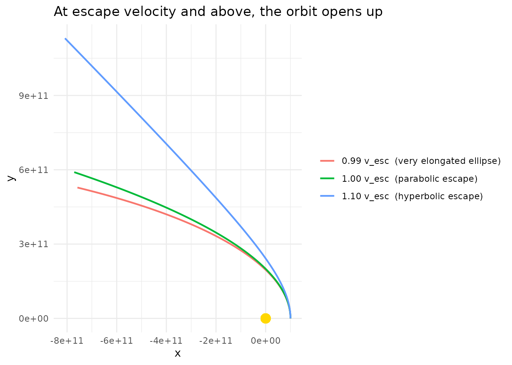
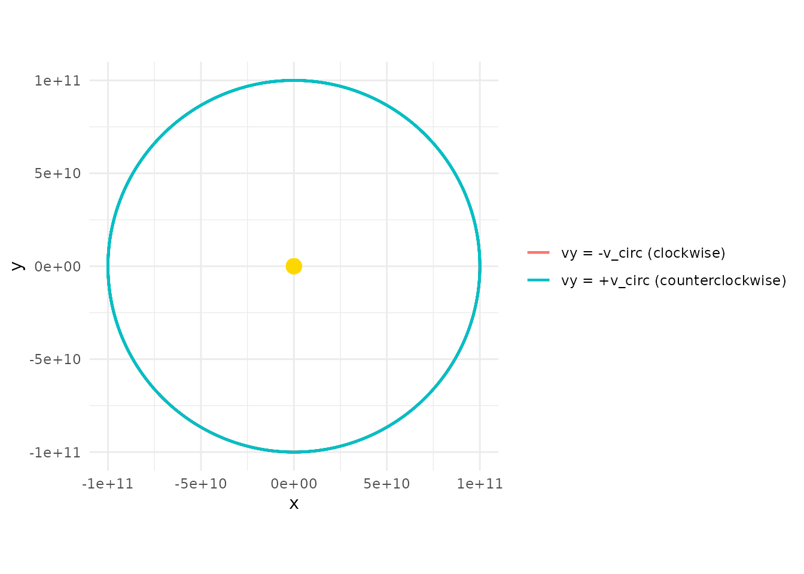
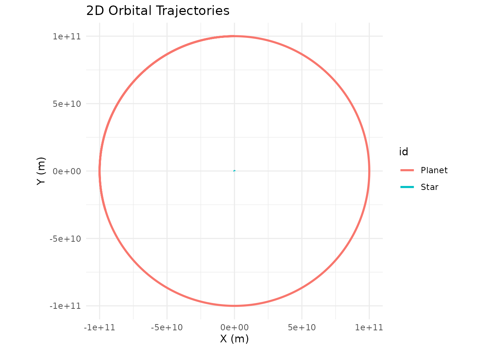

Building Two-Body Orbits From Scratch
Source:vignettes/building-two-body-orbits.Rmd
building-two-body-orbits.RmdMost tutorials hand you a finished orbit and ask you to trust that the numbers are right. This guide goes the other way: it walks through the decisions that shape a two-body orbit so that by the end you can dial in any stable configuration you want from scratch.
The three things you need to decide are:
- Where each body starts (its position)
- How fast the orbiting body is moving and in what direction (its velocity)
- Which body is heavy enough to sit still at the center (its mass)
Get any of these wrong and the orbit either crashes, escapes, or looks bizarrely eccentric. Get them right and the result is a clean closed loop that repeats forever.
The Convention: Central Body at the Origin
For any two-body problem, the easiest mental model is to put the heavier body at the origin with zero velocity and give the lighter body all the interesting initial conditions. This works as long as the central body is much more massive than the orbiter — good for Sun/planet and Earth/Moon, not so good for binary stars of comparable mass (more on that at the end).
system <- create_system() |>
add_body("Star", mass = 1e30) |> # heavy; sits at origin
add_body("Planet", mass = 1e24, x = 1e11, vy = ?) # light; on the +x axisThat ? in the velocity is the whole ballgame. Everything
else follows from how much sideways motion we give the planet at that
starting distance.
Why Velocity Must Be Perpendicular to Position
Gravity always pulls the planet radially — straight toward the star along the line connecting them. If the planet’s velocity has a component pointing along that same radial line, the orbit won’t be symmetric: the planet will either be falling inward or climbing outward at its starting position, not at the closest or farthest point of its path.
For a clean circle or a symmetric ellipse with its major axis on a
coordinate plane, you want the starting velocity to be
perpendicular to the starting position vector. Put the
planet on the +x axis (x = 1e11, y = 0) and give it a
purely vertical velocity (vx = 0, vy = v). The starting
position is then either the closest point (perihelion) or the farthest
point (aphelion) of the ellipse, depending on whether v is
above or below the circular speed.
This isn’t a physics requirement — any velocity produces a valid orbit — but it makes the geometry much easier to reason about.
The Circular Orbit Velocity
At distance from a central mass , the speed that produces a perfect circle is:
In code:
M <- 1e30 # central mass (kg)
r <- 1e11 # starting distance (m)
v_circ <- sqrt(gravitational_constant * M / r)
v_circ
#> [1] 25834.67Plug that into the planet’s vy and you get a circle:
create_system() |>
add_body("Star", mass = M) |>
add_body("Planet", mass = 1e24, x = r, vy = v_circ) |>
simulate_system(time_step = seconds_per_hour, duration = seconds_per_year) |>
plot_orbits()
That’s it. One line of math, one call to add_body(), and
you have a stable circular orbit.
What Happens If You Get the Speed Wrong?
Real orbits are almost never perfect circles. The more interesting
question is: what does the orbit look like when vy
isn’t exactly v_circ? Let’s sweep through a few
values and find out.
make_sim <- function(v, label) {
create_system() |>
add_body("Star", mass = M) |>
add_body("Planet", mass = 1e24, x = r, vy = v) |>
simulate_system(time_step = seconds_per_hour, duration = seconds_per_year * 2) |>
filter(id == "Planet") |>
mutate(case = label)
}
bind_rows(
make_sim(0.7 * v_circ, "0.7 v_circ (too slow)"),
make_sim(1.0 * v_circ, "1.0 v_circ (circle)"),
make_sim(1.2 * v_circ, "1.2 v_circ (ellipse)"),
make_sim(1.4 * v_circ, "1.4 v_circ (wider ellipse)")
) |>
ggplot(aes(x = x, y = y, color = case)) +
geom_path(linewidth = 0.8) +
geom_point(x = 0, y = 0, color = "gold", size = 4, inherit.aes = FALSE) +
coord_equal() +
theme_minimal() +
labs(title = "Same starting point, different starting speeds",
color = NULL)
A few things to notice:
-
At exactly
v_circyou get a circle. -
Below
v_circ, the orbit is an ellipse whose far side is still at the starting distancer, and whose near side dips closer to the star. The starting point is aphelion (farthest point). -
Above
v_circ(but below escape velocity), the orbit is an ellipse whose near side is the starting distance, and the far side swings out much further. The starting point is perihelion (closest point). - At or above , the orbit is no longer bound — the planet escapes on a parabolic or hyperbolic trajectory and never comes back. We’ll see this in the next section.
The “too slow” case will actually crash into the star in this
simulation because with softening = 0 the acceleration
diverges at close approach. That’s one reason the
unstable-orbits vignette recommends adding a softening
length for anything that passes close to the center.
Escape Velocity
If you push vy hard enough, the planet’s kinetic energy
exceeds the gravitational binding energy and it leaves forever. The
threshold is:
v_esc <- sqrt(2) * v_circ
bind_rows(
make_sim(0.99 * v_esc, "0.99 v_esc (very elongated ellipse)"),
make_sim(1.00 * v_esc, "1.00 v_esc (parabolic escape)"),
make_sim(1.10 * v_esc, "1.10 v_esc (hyperbolic escape)")
) |>
ggplot(aes(x = x, y = y, color = case)) +
geom_path(linewidth = 0.8) +
geom_point(x = 0, y = 0, color = "gold", size = 4, inherit.aes = FALSE) +
coord_equal() +
theme_minimal() +
labs(title = "At escape velocity and above, the orbit opens up",
color = NULL)
Just below escape velocity you still have a (very stretched) closed ellipse. At and above it, the trajectory is an open curve and the planet never returns.
Which Direction Does the Orbit Go?
The sign of vy sets the direction of travel. Starting on
the +x axis:
-
vy > 0→ the planet moves in the +y direction initially → counterclockwise orbit (viewed from +z). -
vy < 0→ the planet moves in the y direction initially → clockwise orbit.
bind_rows(
make_sim( v_circ, "vy = +v_circ (counterclockwise)"),
make_sim(- v_circ, "vy = -v_circ (clockwise)")
) |>
ggplot(aes(x = x, y = y, color = case)) +
geom_path(linewidth = 0.8) +
geom_point(x = 0, y = 0, color = "gold", size = 4, inherit.aes = FALSE) +
coord_equal() +
theme_minimal() +
labs(color = NULL)
Both traces the same circle — the only difference is the direction of travel, which only becomes visually obvious in an animation.
Rotating the Whole Setup
There’s nothing magical about the +x axis. If you’d rather place the
planet on the +y axis, you just swap: position goes in y,
velocity goes in vx (with the opposite sign convention for
direction).
create_system() |>
add_body("Star", mass = M) |>
add_body("Planet", mass = 1e24, y = r, vx = -v_circ) |>
simulate_system(time_step = seconds_per_hour, duration = seconds_per_year) |>
plot_orbits()
Same circle, rotated 90 degrees. You can place the planet anywhere in
the plane, as long as the velocity vector is perpendicular to the
position vector and has magnitude v_circ (for a circle) or
some deliberate deviation from it (for an ellipse).
When the Central Body Isn’t Much Heavier
Everything above assumed the star is so heavy that it doesn’t move appreciably. That’s a fine approximation when the mass ratio is (Sun/Earth is ), but it breaks down for binary stars, Pluto-Charon, or any system where the two masses are comparable.
For those, both bodies orbit their common center of mass (the barycenter), and you need to give both bodies initial velocities that satisfy conservation of momentum. The Kepler-16 example shows how to do this for a realistic binary-star-plus-planet system. The short version:
- Put the two bodies on opposite sides of the origin at distances inversely proportional to their masses.
- Give each an initial velocity in opposite directions, again inversely proportional to mass.
- The orbital speed of each body around the barycenter uses the other body’s mass and the total separation.
For anything resembling a planet around a much heavier star, the single-body approach in this guide is all you need.
Recap
To build a stable two-body orbit from scratch:
- Pick a central mass and place it at the origin with zero velocity.
- Pick a starting distance
for the orbiter and place it on one axis
(e.g.
x = r, y = 0, z = 0). - Compute .
- Give the orbiter a velocity perpendicular to its position vector
(e.g.
vy = v_circ, vx = 0). Use exactlyv_circfor a circle, less for an inward ellipse, more for an outward ellipse,sqrt(2) * v_circor above for an escape trajectory.
That’s the entire recipe. Every built-in example in
orbitr — and every custom system you build — boils down to
applying these four steps to one pair of bodies at a time.